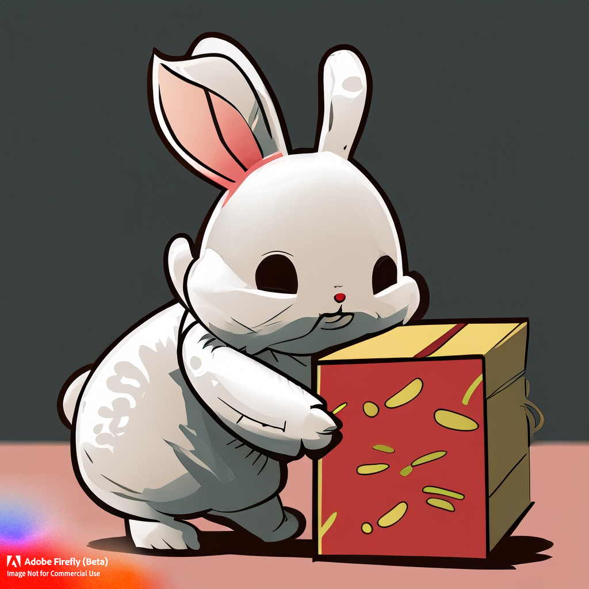

Iniciei minha jornada no mercado de trabalho aos 16 anos.
Office Boy - Fundação Faculdade de Medicina (Abril 2019/ Julho
2019)
Entregava documentos em todo o complexo hospitalar do
HCFMUSP.
3 meses depois recebi minha primeira promoção!
Me tornei Auxiliar de Recursos Humanos (Julho de 2019/
Novembro de 2021)
Desde então, fiquei muito feliz e atuava em todas as áreas de
nosso RH.
J&T Express
Tive oportunidade em atuar nesse gigante da logística como
terceiro.

Atuava como Auxiliar de Recursos Humanos e era responsável por
mais de 400 colaboradores.
Analista de Recursos Humanos
Recebi minha promoção nove meses depois, logo comecei
automatizar algumas de minhas tarefas com Python para os
gestores chineses.
Elaborei uma plataforma para acompanharem os indíces de
absenteísmo.
Utilizei alguns recursos e tecnologias em toda a minha
carreira.
Portanto este é um resumo bem breve e básico de minha
história, tenho total interesse em detalhar e conversar com
vocês sobre ela de forma completa e detalhada.